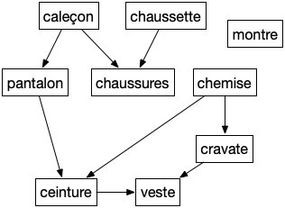

Problèmes d’ordonnancements
TBD DFS et Problème d’ordonnancements
TBD tri topologique dans un DAG avec un DFS + à la visite ajoute en fin de liste. Ensuite on regarde la liste à l'envers
Un problème d'ordonnancement peut se modéliser par un DAG nommé graphe de dépendances où si $xy$ est une arête alors il faut faire $x$ avant de pouvoir faire $y$.
Pourquoi ne doit-il pas y avoir de cycles dans un graphe de dépendance ?
solution
solution
Il est clair que s'il y a un cycle on ne peut réaliser le projet.
Vous résolvez des problèmes d'ordonnancement tous les jours comme par exemple comment s'habiller le matin (voir graphe ci-après)

Montrer que le tri topologique est une solution au problème d'ordonnancement. Appliquez le au problème de s'habiller le matin.
solution
solution
De plus un tri topologique fait que lorsque l'on s'attelle à la tache $v_i$ on a déjà fait tous ses prédécesseurs (ses prés-requis).
C'est encore un exemple où les contraintes sont locales et ou l'on cherche une solution globale.